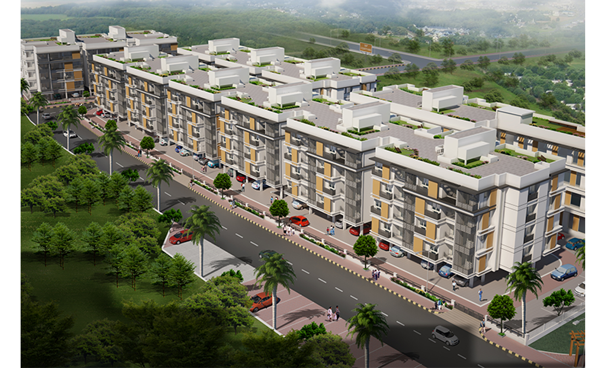

Places Around Me
S & P ESSENSE

S&P Essense is located in Mogappair West Extension on the periphery of Anna Nagar, an upmarket residential locality in Chennai adjoining S&P Living Spaces, a 7 lakh sq. ft. self-contained residential township built on 10.91 acres.
The township is being developed in a land area of 3.3 acres with 200 well-appointed 1.5BHK, 2BHK & 3BHK apartment units in sizes ranging from 560 sq ft to 1761 sq ft in stilt plus four configurations.
S&P Essense shall have amenities like swimming pool, Gym, Library lounge, community hall etc. housed in a separate clubhouse block. S&P Essense infrastructure will include a Water Treatment Plant, Sewage Treatment Plant, DG Back up and landscaped gardens & children’s play area.